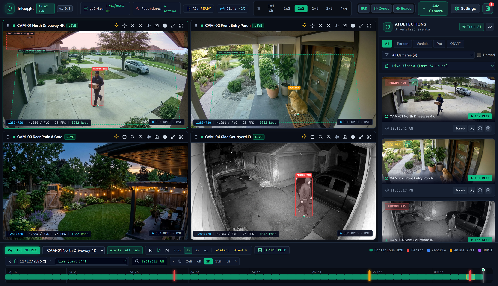
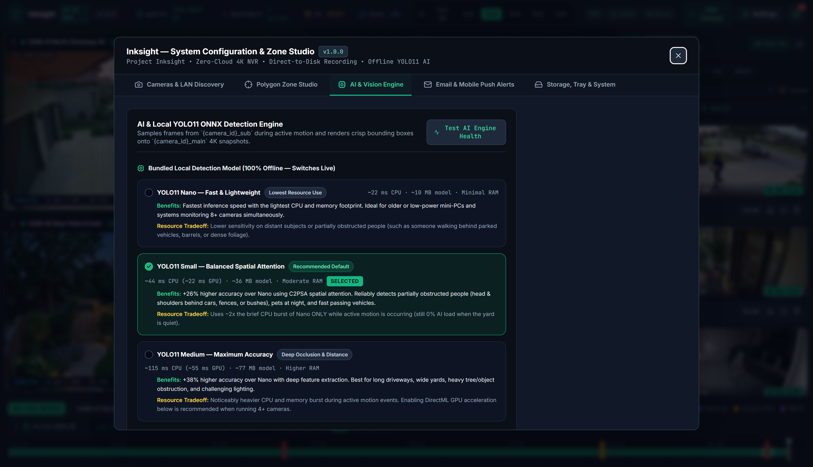

Turn Any Windows PC Into a
4K AI Security Camera NVR
Install in 60 seconds with one Setup.exe. Discover your RTSP/ONVIF cameras
automatically, record 24/7 native 4K video straight to your hard drive with 0% background
transcoding, and get offline YOLO11 AI alerts without paying a cent.

⚡ 60-Second Setup.exe
No Docker Desktop, no Linux VM, no Python virtualenvs, and zero config files. Pick your recording drive and scan your network for cameras in two clicks.
🎥 Unobstructed Adaptive 4K Matrix
Smooth sub-stream multi-camera grid with instant native 4K hot-swap on solo/fullscreen. Dedicated header bars never cover your camera view or timestamp.
🧠 Offline YOLO11 + DirectML GPU
Ships with YOLO11 Nano, Small, and Medium models built in. Run on CPU or accelerate on any NVIDIA, AMD, or Intel GPU via Windows DirectML.
🚗 Stationary Car Suppression
Ignores parked cars sitting in your driveway day and night, while firing an instant alert the moment a person walks up or a parked car pulls away.
💾 0% Transcode Direct-to-Disk
Streams raw H.264/H.265 packets straight to MP4 files with circular disk quota cleanup, 24/7 pre-login Windows Service operation, and forensic timeline scrubbing.
📲 Instant Phone & Email Alerts
Receive annotated 4K snapshots and MP4 clips via Telegram, Ntfy.sh, Pushover, or SMTP email — with zero monthly cloud fees.
Bundled Offline YOLO11 Models
Switch live inside Settings → AI Engine to match your PC hardware:
| Model | Size | Recommended Hardware & Use Case | Inference Speed |
|---|---|---|---|
YOLO11 Nano (yolo11n) |
10 MB | Mini-PCs (Intel N100/N95), older CPUs, or 8+ camera rigs | ~35 ms CPU / ~8 ms GPU |
YOLO11 Small (yolo11s — Default) |
36 MB | Best all-round accuracy for distant cars, pets, and night IR | ~85 ms CPU / ~14 ms GPU |
YOLO11 Medium (yolo11m) |
77 MB | Maximum recall on wide 4K street views & partial occlusion | ~180 ms CPU / ~24 ms GPU |

Frequently Asked Questions
Is Inksight really 100% free with no camera limits?
Yes. Inksight is free and open-source software under the AGPL-3.0 license. There are no camera limits, no subscriptions, no cloud accounts, and no telemetry.
Why does Windows show a blue "Windows protected your PC" screen on first install?
Because Inksight is a free open-source community project rather than a paid commercial company spending hundreds of dollars per year on an EV code-signing certificate, Windows SmartScreen displays a standard prompt for new installers. Click More info → Run anyway. Every release includes a public SHA-256 hash and full source code.
Which cameras work with Inksight?
Any IP camera that supports standard RTSP or ONVIF — including Reolink, Dahua, EmpireTech, Hikvision, Annke, Amcrest, Lorex, TP-Link Tapo, Ubiquiti (RTSP), and generic ONVIF cameras.